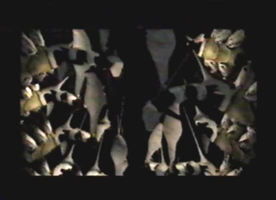

Dormant Tower Pure Types  |
| Info While on my way to meet Craymen, and while moving through one of the many corridors within the Tower, I observed pure type monsters that were hanging from the ceiling. These creatures were dormant of course, and were of no threat to me or my safety. They were quite strange, nothing like I had ever seen. The creatures had wings like my dragon, as well as a giant abdomen with multiple spikes protruding from it. I just hoped they wouldn't awaken any time soon! |
Uru White Eel
|
|
Info As Craymen and I moved throughout the corridors of the Tower, I noticed we were underwater, near Uru. The walls of the vast corridor were transparent, and I could see many sea creatures swimming past us. Most noticeably among them, was a strange white eel that swam by. It wasn't like the eels from the Uru Passage, I had seen previously. This one was pure white, had a rounded head, and a long thin tail. It was mysterious and awe inspiring, to watch. |